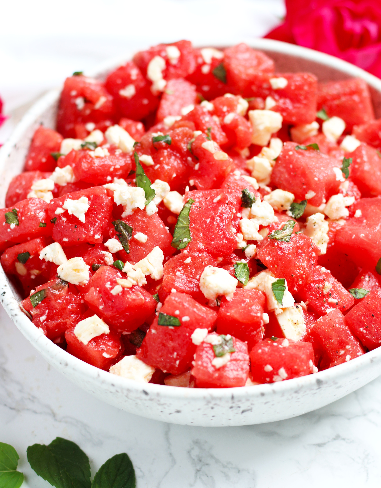

Watermelon Salad

Description
A quick salad of watermelon and basil. The chili powder plays well with the sweetness of the melon.
Ingredients
- 1/4 cup basil leaves
- 4 cups 1/2-inch cubes watermelon
- 2 teaspoons lemon juice
- 1/4 teaspoon kosher salt
- 1/4 teaspoon chili powder
Steps
- Stack basil leaves on top of each other and roll tightly into a log. Slice lengthwise into thin ribbons.
- Combine basil slices and watermelon in a large bowl and drizzle with lemon juice.
- Mix salt and chili powder together in a small bowl. Sprinkle over watermelon and toss to combine.
- Chill salad before serving, at least 30 minutes.